Dialogue System for Unity¶
Install packages¶
Warning
This package is a supplement package to support Pixel Crushers’ Dialogue System for Unity. The package must be included in your project. (If not, some script error occurs)
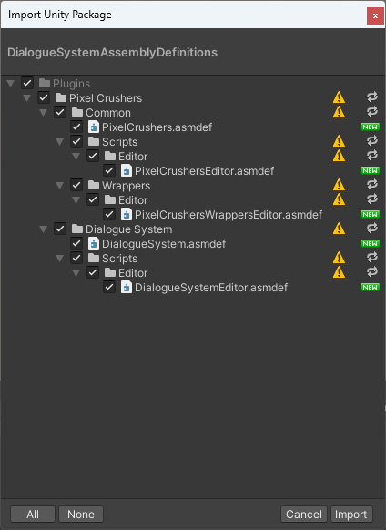
Import supplement package at Assets/Plugins/Pixel Crushers/Dialogue System/Scripts/DialogueSystemAssemblyDefinitions.unitypackage to setup assembly definition
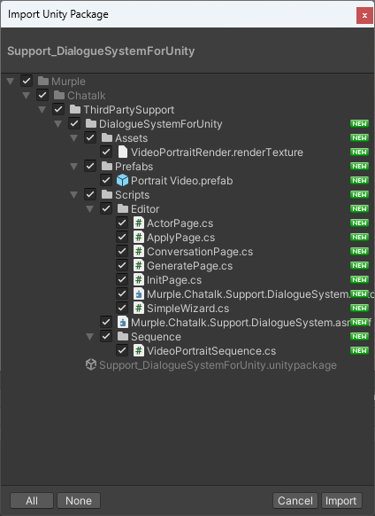
Next, import supplement package at Assets/Murple/Chatalk/ThirdPartySupport/Support_DialogueSystemForUnity.unitypackage
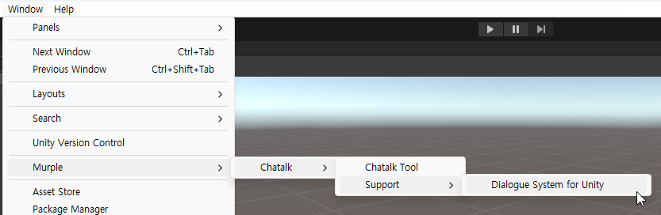
You can find Chatalk menu in Winodw -> Murple -> Chatalk -> Support -> Dialgoue System for Unity when installation is complete.
Open wizard window¶
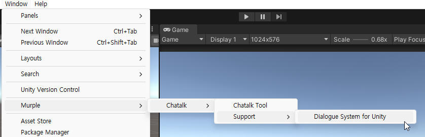
Open Dialogue System for Unity Wizard from Window -> Murple -> Chatalk -> Support -> Dialogue System for Unity
Initialize step¶
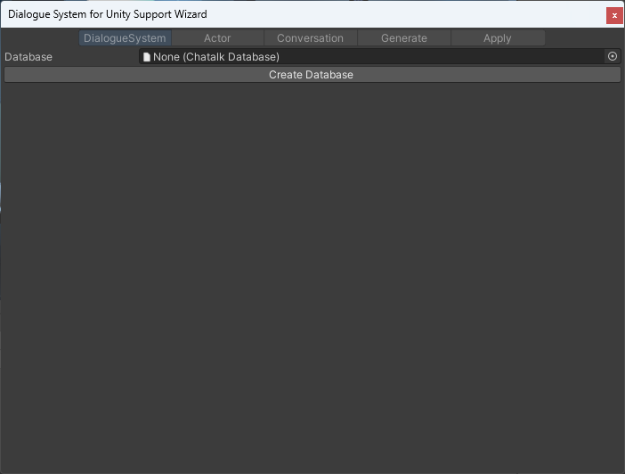
If this is first time to use Chatalk, or database asset of Chatalk is missing, you should make Chatalk database asset.
Make database asset to click Create Database button. If there is already database, please select your database.
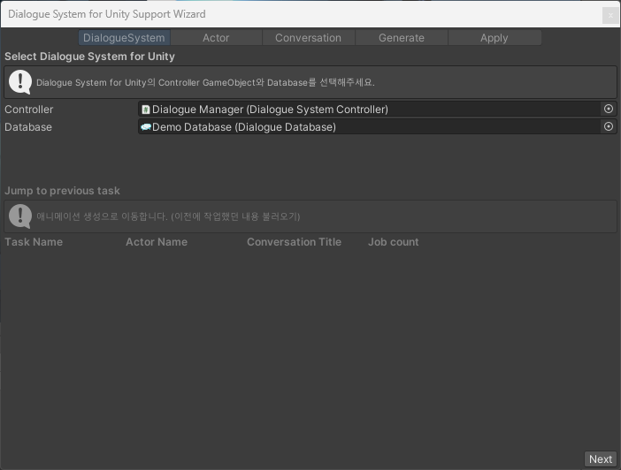
Select Controller GameObject and Database Asset of Dialogue System to apply Chatalk.
If you select vaild GameObject and Asset, you can proceed to next step.
This tutorial uses the DemoScene(DemoScene1.unity) from the Dialogue System for Unity. Please select Controller and Database used in the demo scene.
Actor step¶
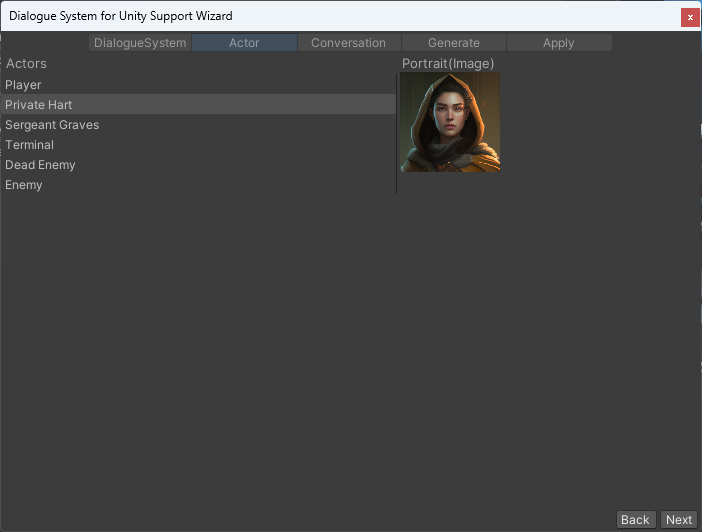
Select Actor who want to make him/her/its talking using Chatalk.
For this tutorial, select Private Hart. In the tutorial, we change the Sprite to apply Chatalk.
If you select vaild Actor (has valid sprite or texture that describe actor’s appearance), you can proceed to next step.
Conversation step¶
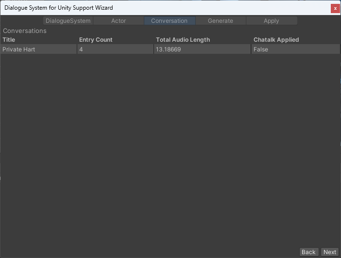
A list of Conversations that Actor involved will appear at left. Becuase Chatalk makes talking animation using audio, you can select only Conversation that contains audio file.
If you select Conversations that has audio files, you can proceed to generation step.
API Key¶
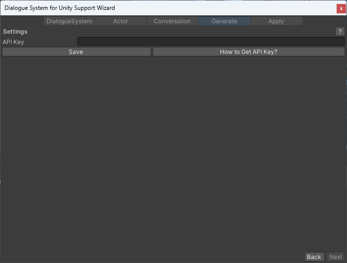
If you did not regist your Chatalk API key, the API Key input field will appear.
Enter your Chatalk API key and click the Save button to proceed.
If you do not have Chatalk API key, please read How to Get API Key? page.
Generation Step¶
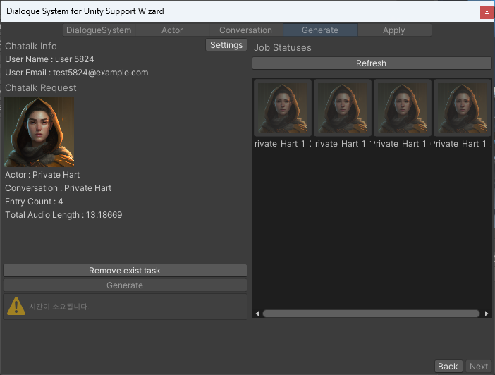
You can proceed with batch request operation by clicking the Generate button.
Chatalk Info |
Description |
|---|---|
UserName |
UserName of API key |
UserEmail |
UserEmail of API key |
Settings |
Show input field to change API key |
Chatalk Request |
Description |
|---|---|
Image |
Portrait image of selected Actor |
Actor |
Name of selected Actor |
Conversation |
Title of selected Conversation |
Entry Count |
Number of entries to apply Chatalk |
Total Audio Length |
Total audio length |
Remove exist task |
If there is already a task that using same Actor and Conversation, you have to remove previous task to re-generate animation. |
Generate |
Send multiple request to generate animation |
Job List |
Description |
|---|---|
Refresh |
Refresh your job list |
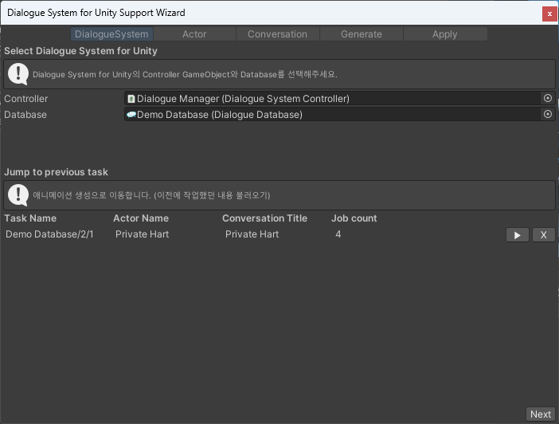
Generate takes time. Do not worry. You can close wizard window to process your work and can resume Chatalk task at first step by clicking ▶ button.
UI |
Description |
|---|---|
▶ |
Go to the Generate Page with the previously task |
X |
Delete previously task |
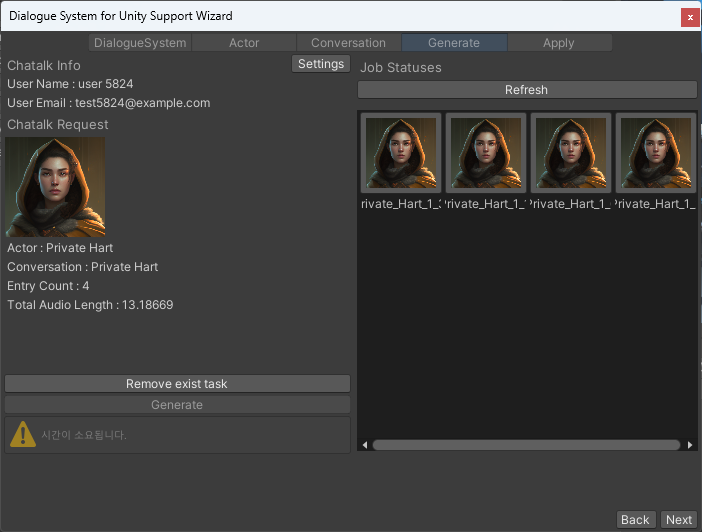
If all generation jobs are completed, you can proceed by clicking the Next button.
Apply Step¶
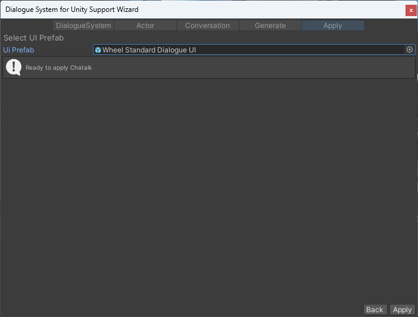
When you enter the Apply Page, all mp4 files of the task are downloaded.
You need to select UI Prefab to apply Chatalk video player.
The prefab must contain Standard Dialogue UI components and Portrait Image.
If all mp4 files are downloaded and you select valid UI Prefab, the message Ready. will appear and you can apply it by clicking the Apply button.
In the tutorial, Wheel Standard Dialogue UI Prefab used in DemoScene1.unity was used.
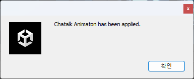
When application is complete, a completion message will appear.
Result¶

This is the play capture using Chatalk animation. In order to view the Chatalk animation larger, we adjusted the size and position of the Portrait Image UI in DemoScene1.unity.